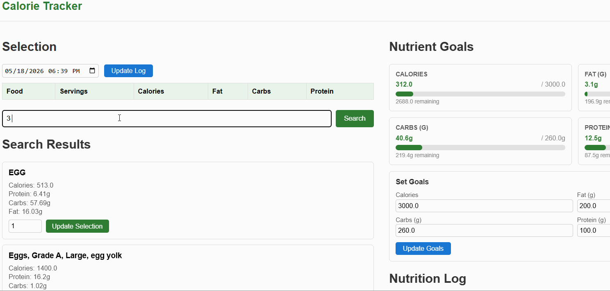
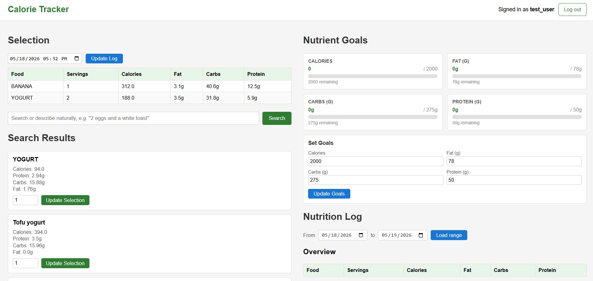
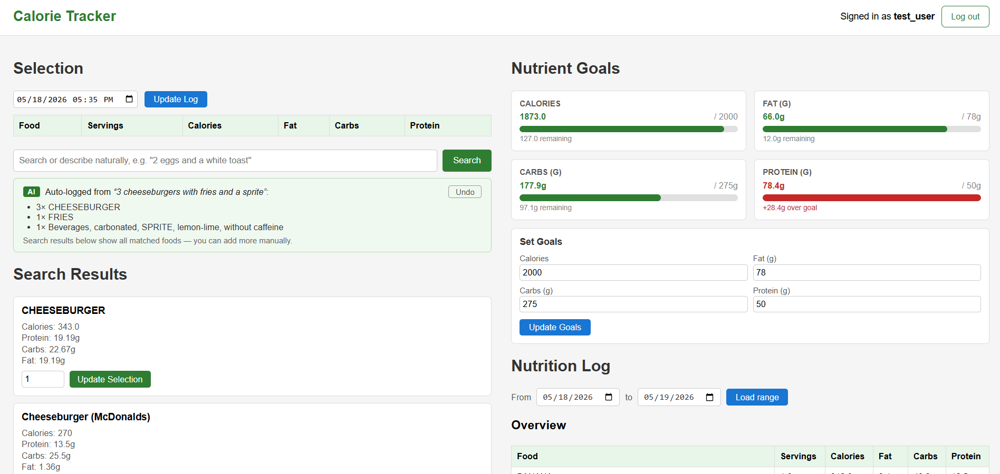
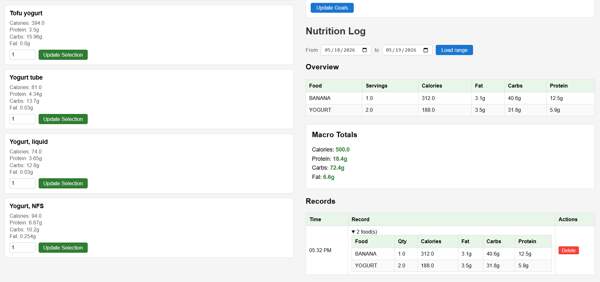

Flask web app for daily macro tracking with AI-powered natural language food logging. Type '2 eggs and a white toast' and the app parses, looks up, and logs each item automatically — backed by 600K+ USDA foods. CI/CD via GitHub Actions.
Originally developed for CS 222 (Software Design Lab) at UIUC with a team of 4, where responsibilities included portions of backend logic, UI, API integration, ML integration, testing, and project management. After the class ended, the project was moved to a personal repo, cleaned up, Gemini AI was added for NLU, CI/CD was wired up, and the app was deployed to Render.
Build a web-based calorie tracker where users can log meals naturally, track custom daily macro goals, browse and manage historical logs, and maintain user accounts, with AI handling the tedious food-lookup step automatically and a TF-IDF ML model deduplicating identical API entries.
A live, deployed web application with a fully automated CI/CD pipeline. Every push to main runs the pytest suite (with all external APIs mocked for offline testing); passing tests trigger automatic redeploy on Render.



